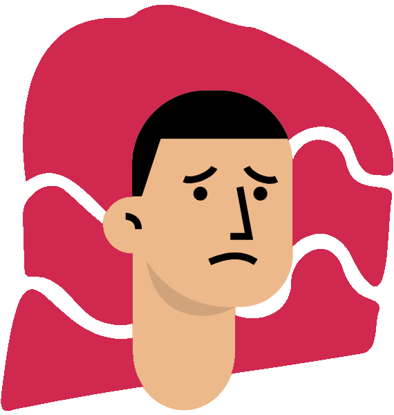
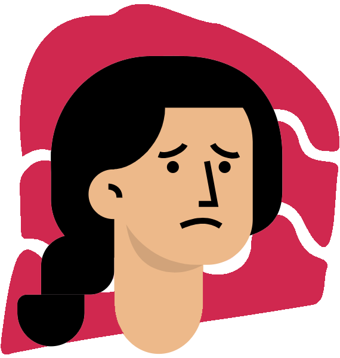

Não tem diabetes, mas quer saber o risco de ter?
Resultado da conta: {{imcText}}
Com qual tipo de corpo você se identifica?


Preencha todos os campos!
Não tem diabetes, mas quer saber o risco de ter?
Resultado da conta: {{imcText}}
Com qual tipo de corpo você se identifica?
Preencha todos os campos!
A ESTIMATIVA É QUE VOCÊ TEM UM ALTO RISCO!
A ESTIMATIVA É QUE VOCÊ TEM UM RISCO MÉDIO!
A ESTIMATIVA É QUE VOCÊ TEM POUCOS RISCOS!
A ESTIMATIVA É QUE VOCÊ TEM UM ALTO RISCO!
A ESTIMATIVA É QUE VOCÊ TEM UM RISCO MÉDIO!
A ESTIMATIVA É QUE VOCÊ TEM POUCOS RISCOS!
Continue se alimentando de frutas, legumes e verduras! Mas se dê o luxo de comer uma besteira uma vez ou outra!
Você conhece os benefícios de uma alimentação rica em frutas, verduras e legumes? Que tal conhecer mais e se alimentar melhor?
Procure construir o hábito de realizar atividades físicas, além de auxiliar na sua saúde física, auxilia também na sua saúde mental!
Continue praticando atividades físicas! Além de melhorar sua saúde física, terá uma melhora na sua saúde mental!
Observações: Independente do resultado, não se preocupe! esse teste é apenas uma estimativa de acordo com seus dados físicos!